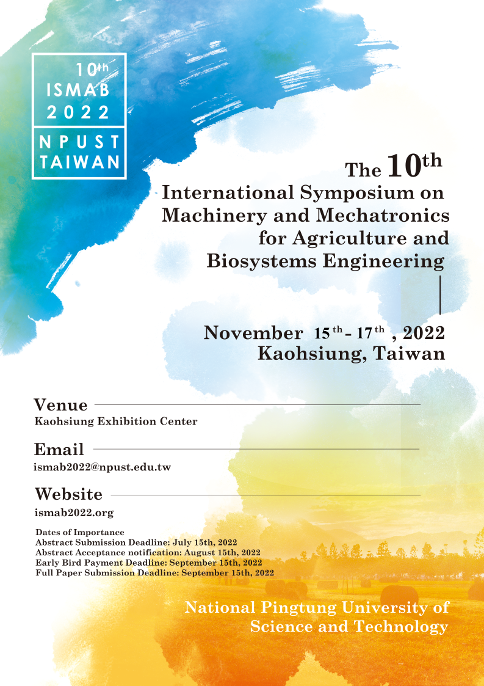

On behalf of the organization committee, it is our great pleasure to invite you to attend the 10th International Symposium on Machinery and Mechatronics for Agriculture and Biosystems Engineering (ISMAB 2022). National Pingtung University of Science and Technology is honored to host this event in Kaohsiung Exhibition Center, Taiwan, on November 15 ~ 17, 2022. The symposium will be held in a hybrid style which combines onsite and remote online participation.
The ISMAB conference has been extended for two years due to the COVID-19 epidemic from 2020. This symposium provides important opportunities for scholars, researchers, engineers, industrial participants and students from the world to share research findings and to exchange information each other in the areas related to agriculture and biosystems Engineering.
The COVID-19 epidemic had a massive impact on the global economy and agriculture. This conference will allow all the participants to discuss the strategies and solutions to the challenges of future economic, environmental, and agricultural issues. We do hope you will find this symposium fruitful; and allow you to renew friendship, make new friends, and also enjoy the pleasant Kaohsiung city.
